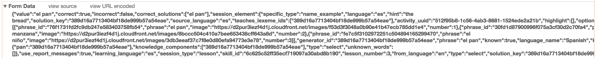

Can robots do my homework?
Hacking Online Foreign Language Tools
All research shown here is ethical because no active attacks are performed on Duolingo or Yabla servers. All exploits are performed locally and do not modify http requests at all when compared to normal usage of either services. All data used in the following exploits was sent intentionally to clients of both services. Additionally, tools created for this research were never used on official assignments that counted towards grades.
After a brief examination of the network traffic used by the Yabla online learning tool, it became apparent that it was incredibly easy to exploit the method by which Yabla loaded transcripts on the frontend in order to automate the completion of their games. A proof of concept chrome extension was written to take advantage of this exploit. Other online language tools such as Duolingo were evaluated, but similar exploits were not found.
Recently, my Spanish teacher announced that the class would begin to receive upwards of three Yabla listening activities per week. The class has also been subject to Duolingo quotas, where we are graded on completing hundreds of lessons in a given semester. Deciding to take advantage of some software development experience, I decided to examine if I could complete these assignments without spending vast amounts of time listening to native Spanish speakers repeatedly or typing for hours on end.
Duolingo is a much newer and much more advanced online foreign language tool. It is written in React and. It is quick at makes use of animations. Duolingo is a much more complicated application than Yabla.
I began be examining the possibility of automating the answering of multiple choice questions.


Yabla uses a PHP backend and a loose policy of one html page per application view. A detailed
analysis of XHR traffic was not necessary as almost all data and code to run the game is
provided within the first load of the php page player_cdn.php. It would appear that
dynamic content is provided through global javascript variables populated in a script tag at the
top of the page by PHP. A quick search of the first lyric of the song revealed the transcript
information in the global javascript variable CAPTIONS.
It is worth noting that upon opening the development console, Duolingo advertises that they are hiring software engineers.

It is apparent immediately that Duolingo utilizes a Single Page Application (SPA) architecture, so I choose to focus analysis on only XHR requests.
| Type | URL | Method | Status | Price |
|---|---|---|---|---|
| XHR | 2x Requests to ?https://api.mixpanel.com/track/?data={large base64 encoded
string} |
GET | 200 | The data parameter in the URL contained base64 encoded key-value paired tracking data. I found it interesting Duolingo was tracking user interaction in a very detailed manner; however, I didn’t find the information very interesting. It did contain sensitive-looking user ids. It seems to me that this could be done much more efficiently by posting a JSON blob. |
| XHR |
2x Requests to https://ljknv3sref.execute-api.us-east-1.amazonaws.com/prod/events
|
POST | 200 | This appears to be an additional tracking endpoint that, in fact does POST a JSON blob. Duolingo is likely experimenting with two different user-interaction tracking systems. |
| XHR |
https://www.duolingo.com/sessions/394864751773?name=Basics-1&language=es&lesson_number=3&type=lesson&speak_capable=true&web_speech_enabled=true&kc_strength_model_version=2&client_grading_data_version=2&_=1489702221619
|
GET | 200 | This request contained a very large amount of information regarding the lesson including references to “surface_forms,” “lexemes,” and other information. See below for a more detailed analysis of this data. |
| XHR |
https://www.duolingo.com/log_grading_result
|
POST | 200 | This endpoint is called whenever a question is answered. It accepts a lengthy form data input and returns only a status code. See below for detailed analysis. |
The response to the URL
https://www.duolingo.com/sessions/394864751773?name=Basics-1&language=es&lesson_number=3&type=lesson…
Appeared to contain all of the information relevant to the lesson. The response included a very
large amount of information regarding the lesson including all questions, which they call
session_elements. A field titled solution_keys was present; however,
they did not appear to match any data currently held in the browser. This could be a hash of the
correct solution or a database key. However, the correct answer is not held in obvious fashion
in the session information.
The property corresponding to the correct answer may not be immediately apparent from reading this data. A further review of traffic and code makes it far more clear. In this capture, the user is asked to translate “the bread” to Spanish. The correct answer is “el pan.” The correct answer was provided.
In this capture the user is asked to translate “the water” to Spanish. The correct answer is “el agua.” An incorrect answer of “el pan” was provided.

Notice that the result appears to be graded before being sent to the server. It would appear that Duolingo is processing the grading on the frontend before sending it to the backend for logging. This opens the doors for a potential exploit. However, it raises the question of which property is being used to validate the phrase.
In order to answer these questions, I decided to examine the code. I downloaded the javascript
file that appeared to contain the application from
http://d7mj4aqfscim2.cloudfront.net/proxy/js2/230720168c0b82eedd46-duolingo.js.
Using free
online tools, I de-minified the code. The code appeared to be only partially obfuscated. As a
result, I was able to read all original function names. The code has some interesting features.
For instance, all instances of “true” have been replaced with “!0” and “!1” for “false.” This
was presumably done by a build engine to compress the file. The /log_graded_result endpoint is
called from the following function logGradedSolution():

These issues could be mitigated by creating a backend endpoint to validate question responses and ensuring that the correct answer is not passed to the client. If the backend validates responses, there is no way for the client to know what the correct response is until the user figures it out.
I decided to analyze the video-based fill in the blank game for the purposes of this research because it appeared to be a unique challenge to exploit and offered the possibility of quick massive time savings for students using an automated tool. The objective of the game is to fill in blanks in transcripts of a song in order to practice Spanish listening skills. Compared to Duolingo, Yabla is a somewhat simplistic application.

Yabla uses a PHP backend and a loose policy of one html page per application view. A detailed
analysis of XHR traffic was not necessary as almost all data and code to run the game is
provided within the first load of the php page player_cdn.php. It would appear that
dynamic content is provided through global javascript variables populated in a script tag at the
top of the page by PHP. A quick search of the first lyric of the song revealed the transcript
information in the global javascript variable CAPTIONS.

As a result, the game can be exploited very easily into giving up the answers to a student or
automation tool. I created a proof of concept chrome extension that automatically plays the game
using content scripts in a chrome extension. First, the script acquires and parses the
transcript data by bypassing chrome's content script sandboxing by parsing the DOM content of
the script tag. Then, it uses DOM manipulation to complete the blank textboxes
automatically.
See the source code listing of the proof of concept here: Yabla Helper Chrome Content Script
These issues could be mitigated by creating a backend endpoint to validate question responses and ensuring that the correct answer is not passed to the client. If the backend validates responses, there is no way for the client to know what the correct response is until the user figures it out.
(function YablaInject(document) {
//API
function levenshteinDistance(a, b) {
if (a.length == 0) return b.length;
if (b.length == 0) return a.length;
var matrix = [];
// increment along the first column of each row
var i;
for (i = 0; i <= b.length; i++) {
matrix[i] = [i];
}
// increment each column in the first row
var j;
for (j = 0; j <= a.length; j++) {
matrix[0][j] = j;
}
// Fill in the rest of the matrix
for (i = 1; i <= b.length; i++) {
for (j = 1; j <= a.length; j++) {
if (b.charAt(i - 1) == a.charAt(j - 1)) {
matrix[i][j] = matrix[i - 1][j - 1];
} else {
matrix[i][j] = Math.min(matrix[i - 1][j - 1] + 1, // substitution
Math.min(matrix[i][j - 1] + 1, // insertion
matrix[i - 1][j] + 1)); // deletion
}
}
}
return matrix[b.length][a.length];
}
//Config
var SCRIPT_SEARCH_TERM = 'CAPTIONS';
var EVENT_LOOP_TIMEOUT = 2000;
var ALPHANUMERIC_REGEX = /[^A-Za-z_]/g;
//Find the script tag containing the captions
var query = document.getElementsByTagName('script');
var scriptContents;
for (var i = 0; i < query.length; i++) {
if (query[i].innerHTML.indexOf(SCRIPT_SEARCH_TERM) >= 0) {
scriptContents = query[i].innerHTML;
}
}
if (!scriptContents) return console.warn('YablaInject could not find Yabla script on this page',
scriptContents);
//Process the contents of the script tag to find the JSON blob representing the captions
//Find the line with the captions JSON
var lines = scriptContents.split(';');
var line;
lines.forEach(function (l) {
if (l.indexOf(SCRIPT_SEARCH_TERM) >= 0) {
line = l;
}
});
if (!line) return console.warn('YablaInject could not find a line with captions in this script',
line);
//Process the line
var captionJsonString = line.split('=')[1].replace(';', '').trim();
//Parse the JSON from the line
var CAPTIONS;
try {
CAPTIONS = JSON.parse(captionJsonString);
} catch (e) {
return console.error('Error parsing captionsJsonString', e);
}
if (!CAPTIONS) return console.warn('YablaInject could not find valid captions on this page',
CAPTIONS);
//Process the captions into readable transcript
var TRANSCRIPT, TRANSCRIPT_LINES, TRANSLATION_LINES, TRANSLATION, PROCESSED_TRANSCRIPT_LINES;
TRANSCRIPT_LINES = CAPTIONS.map(function (a) {
return a.transcript;
});
PROCESSED_TRANSCRIPT_LINES = CAPTIONS.map(function (a) {
return {
processed: a.transcript.replace(ALPHANUMERIC_REGEX, '').toLowerCase().trim(),
unprocessed: a.transcript
}
});
TRANSCRIPT = TRANSCRIPT_LINES.join('\n\n');
TRANSLATION_LINES = CAPTIONS.map(function (a) {
return a.translation;
});
TRANSLATION = TRANSLATION_LINES.join('\n\n');
//Dump the transcript to the console before doing anything funky
console.info('Dumping Yabla transcript for your reading pleasure...');
console.info('English: ', TRANSLATION);
console.info('Spanish: ', TRANSCRIPT);
//DOM Manipulation loops
function loop() {
var question_wrap = document.getElementsByClassName('question_wrap')[0];
var question_answer = document.getElementById('cloze_answer');
if (question_wrap&&question_answer&&(question_answer.value==='')) {
var QUESTION_TEXT_BAD_WORDS = ['slow', 'replay', 'submit', 'answer', 'next', 'question']
var processedQuestionText = question_wrap.textContent.replace(ALPHANUMERIC_REGEX,
'').toLowerCase().trim();
QUESTION_TEXT_BAD_WORDS.forEach(function (word) {
processedQuestionText = processedQuestionText.replace(word, '');
});
//Remove any complete lines of transcript from the processed line because a complete transcript
line
//Will never hold the answer
PROCESSED_TRANSCRIPT_LINES.forEach(function (processedTranscriptLine) {
processedQuestionText=processedQuestionText.replace(processedTranscriptLine.processed, '');
});
// //Sort transcript entries by closeness and remove dupes
var candidates = PROCESSED_TRANSCRIPT_LINES
.filter(function (item, pos) {
var index;
PROCESSED_TRANSCRIPT_LINES.forEach(function (a, p) {
if (a.processed === item.processed) index = p;
});
return index === pos;
})
.sort(function (a, b) {
return levenshteinDistance(a.processed, processedQuestionText)-levenshteinDistance(b.processed,
processedQuestionText);
});
var processedTranscriptLine = candidates[0];
//Find the missing word
var missingWords = [];
processedTranscriptLine.unprocessed.replace(/[,?;':.\\\/\(\)]/g,'').split(' ').forEach(function
(word) {
var processedWord = word.replace(ALPHANUMERIC_REGEX, '').toLowerCase().trim();
if (processedQuestionText.indexOf(processedWord)>=0) return;
if (missingWords.indexOf(processedWord)>=0) return;
missingWords.push(word);
});
var missingPhrase = missingWords.join(' ');
question_answer.value=missingPhrase;
}
//Another iteration
return setTimeout(loop, EVENT_LOOP_TIMEOUT);
}
//Start the loop
loop();
})(document);See more at https://github.com/jake-billings/YablaHelper